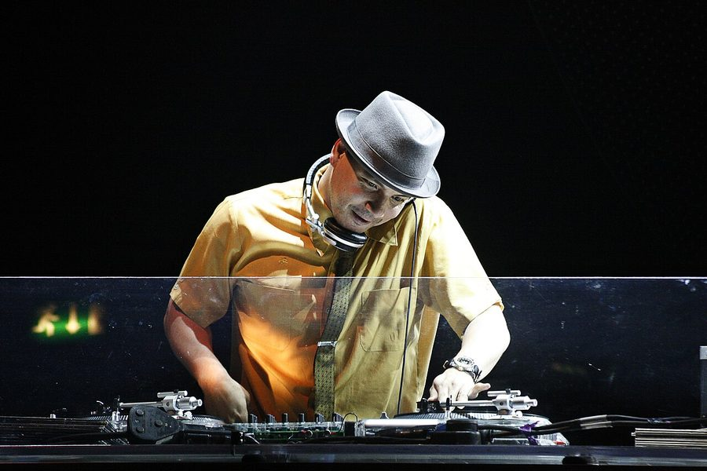

Mixmaster Mike cancels solo Australian shows



Due to contractual obligations, the master turntable technician Mixmaster Mike will no longer be playing his previously announced solo shows while touring with the Beastie Boys next month. Originally the shows were scheduled for Home in Sydney, Tivoli in Brisbane and the Espy in Melbourne, but inthemix has received word that the Good Vibrations festivals will be your only chance to see Mixmaster Mike jump behind the decks.
Any tickets purchased will be refunded at the point of purchase. For anymore info on the national Good Vibrations festival, check out the ITM Festival Page HERE.